Capsmat
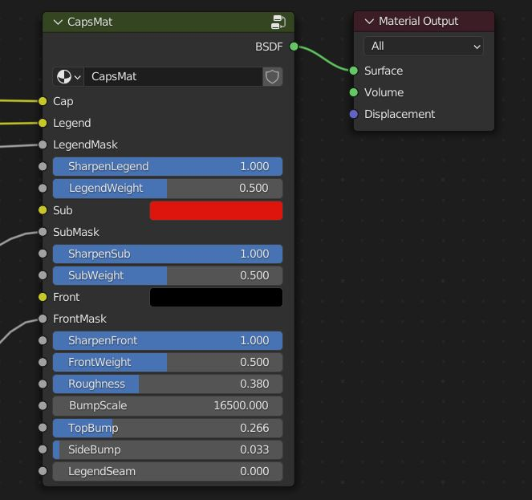
Einstellungen
Kappe
Dies ist die Grundfarbe der Keycap, die durch das Farbfeld gesteuert werden kann, indem man den Socket mit einer Palette verwendet.
Beschriftung
Dies ist die Beschriftung-Farbe. Sie können eine Farbe wählen, eine Palette einstecken, um die Farbe zu steuern oder sogar ein Bild in den Sockel für volle Farblegenden einstecken.
Beschriftung Maske
Ein weißes auf schwarzem Bild wird in diesen Sockel gesteckt, um zwischen der Kappenfarbe und der Beschriftung-Farbe zu mischen.
Beschriftung
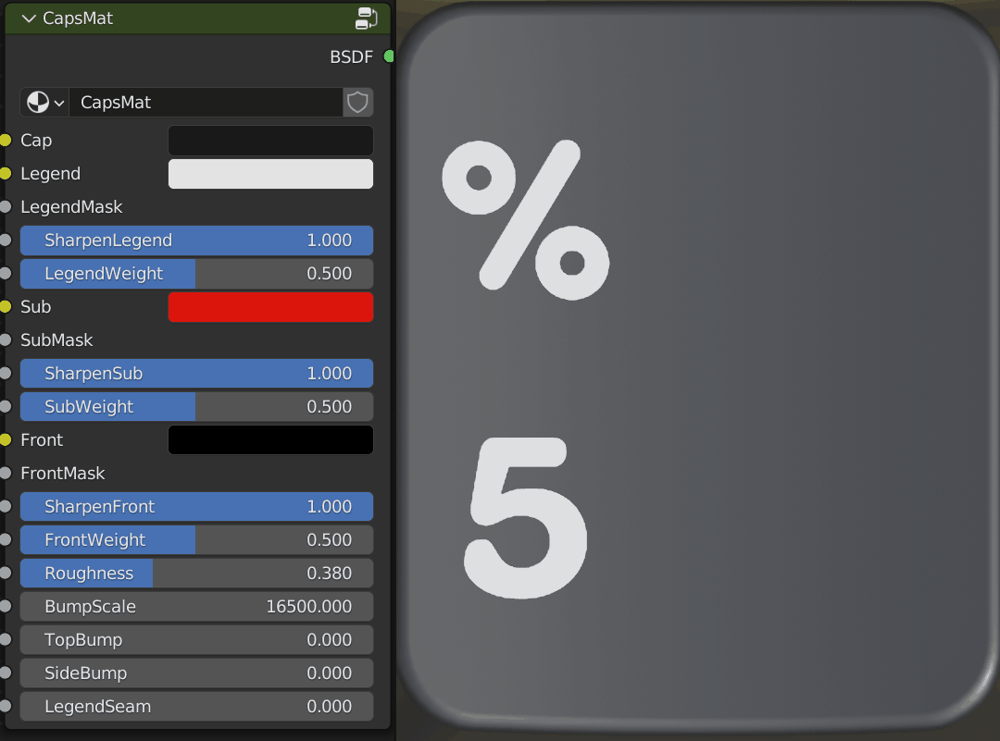
Dies wird verwendet, um die Kante des Beschriftung zu schärfen, um als Doubleshot-Spritzguss Beschriftung zu erscheinen. Dies ist standardmäßig auf voll eingestellt, aber Sie können es auf Null schieben, um mehr von einem Farbstoff sublimierten Look zu simulieren.
Beschriftung Gewicht
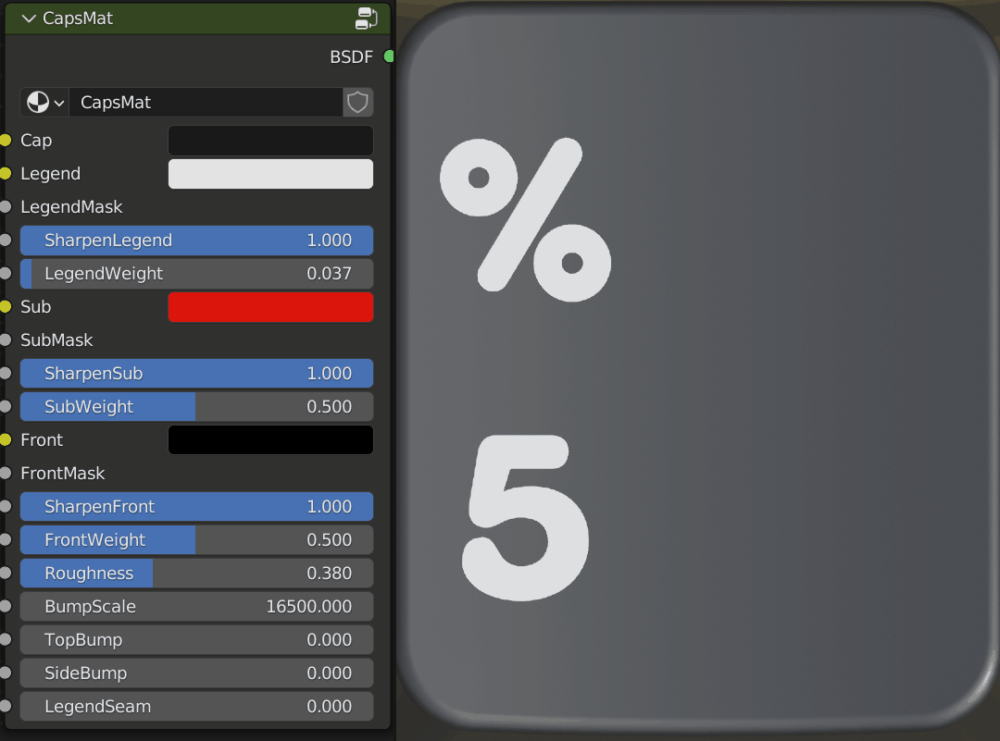
Aufgrund der Art und Weise, wie die Beschriftung-Schärfung funktioniert, können Sie auch das Gewicht kompensieren möchten, um die Beschriftung. Eine kleinere Zahl bedeutet ein fetter Beschriftung.
Unter
Das ist die Farbe der Zusatzbeschriftungen.
Untermaske
Dies ist der Socket, den Sie in Ihre Zusatzbeschriftung Dateien einstecken können.
Sub schärfen
Wie Sharpen Beschriftung, tut das dasselbe für Zusatzbeschriftungen.
Untergewicht
Wie Beschriftung Gewicht aber für Zusatzbeschriftungen.
Vorderseite
Das ist die Farbe für die Frontbeschriftungen.
Maske vorn
Dies ist der Sockel für die Frontbeschriftung Maske.
Vorne schärfen
Genau wie Sharpen Beschriftung, aber für Frontbeschriftungen.
Vordergewicht
Dies ist das gleiche wie Beschriftung Gewicht, aber für Frontbeschriftungen.
Rauheit
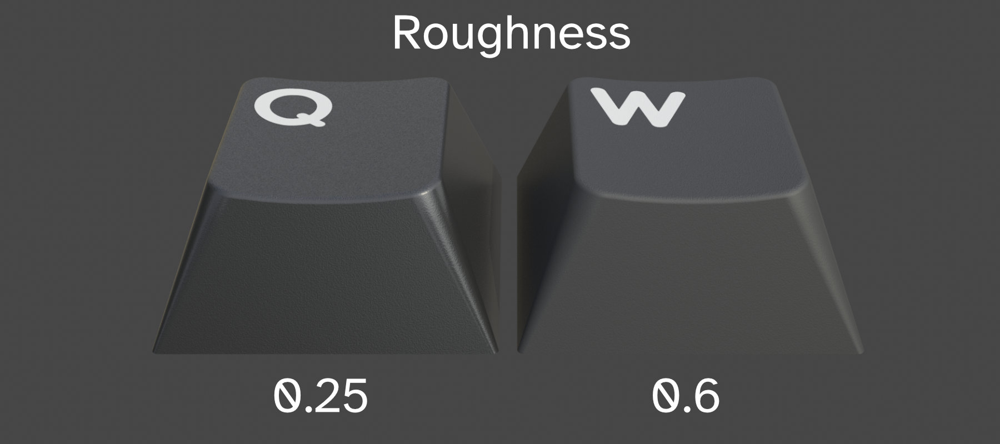
Dies ist die Gesamt Rauheit oder Glossigkeit für das Keycap Material. Dies wird je nach Art des Kunststoffs oder Finishs variieren, nach dem Sie streben. Zum Beispiel wird PBT in der Regel eine höhere Rauheit als ABS haben.
Bump Scale
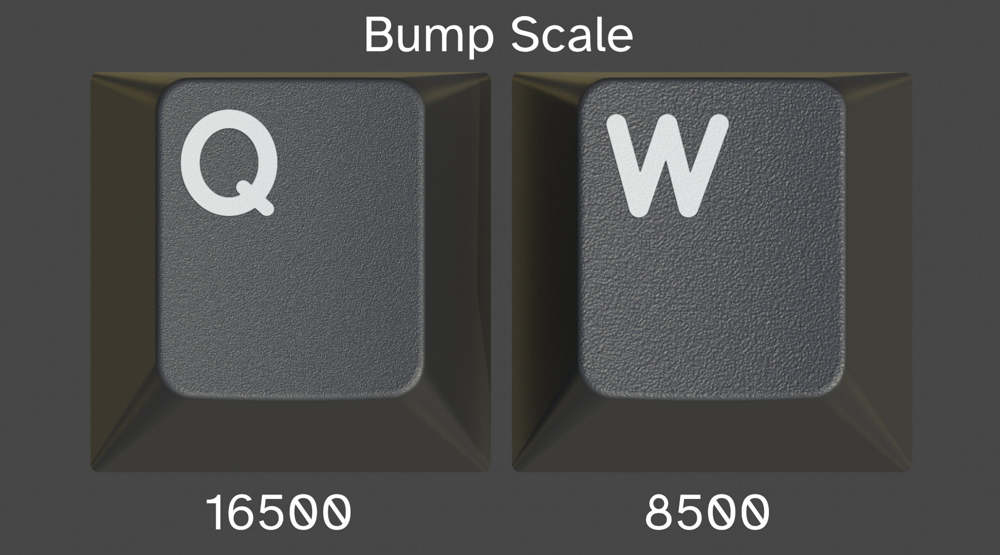
Dies ist die Skala oder das Korn des Stoßgeräuschs. Denken Sie daran, das gleiche wie Grit für Sandpapier in, dass eine größere Zahl eine höhere Dichte darstellt.
Top-Pumpe
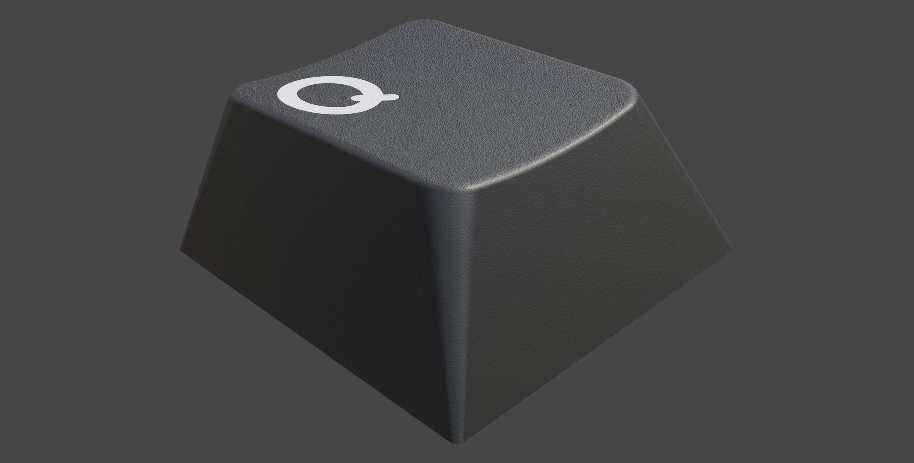
Dies ist die Intensität der Beule an der Spitze der Keycap.
Seitenstumpf
Dies ist die Intensität der Beule an der Rückseite, vorn und an den Seiten der Keycap.
Beschriftung Naht
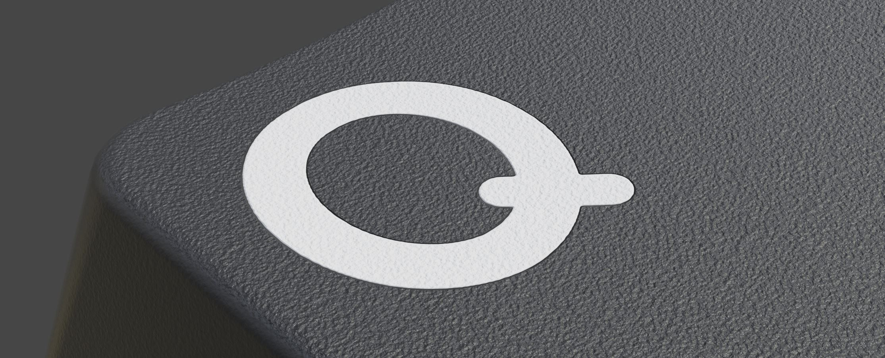
Einige Doubleshot-Spritzguss-Prozesse führen zu einer ausgeprägteren Naht zwischen Beschriftung und Keycap.
Masken
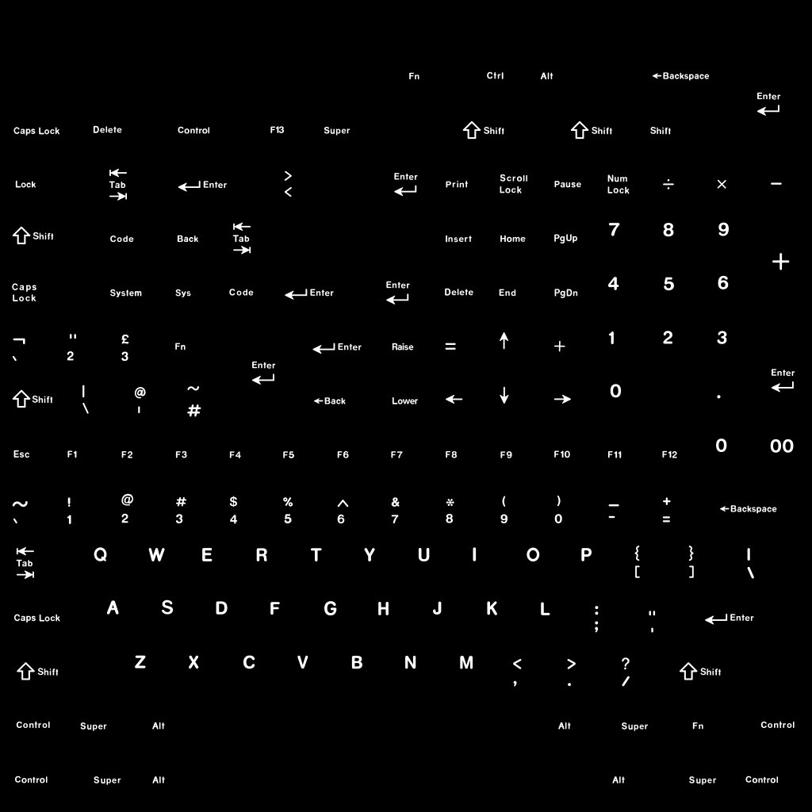
Eine Maske ist ein weißes auf schwarzem Bild, das definiert, wie man zwei Farben oder Elemente zusammen mischen. Betrachten Sie, weiß zu sein ON und schwarz zu sein OFF.
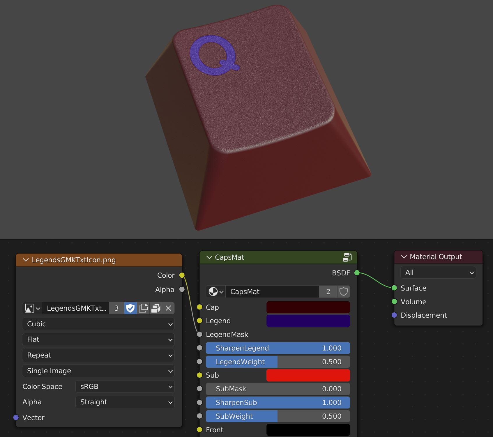
Im Capsmat werden Masken verwendet, um die Kappe mit der Beschriftung, der Kappe mit der Zusatzbeschriftung und der Kappe mit der Frontbeschriftung zu mischen. Sind diese nicht vorhanden, wird sie für diesen Teil schwarz oder aus.
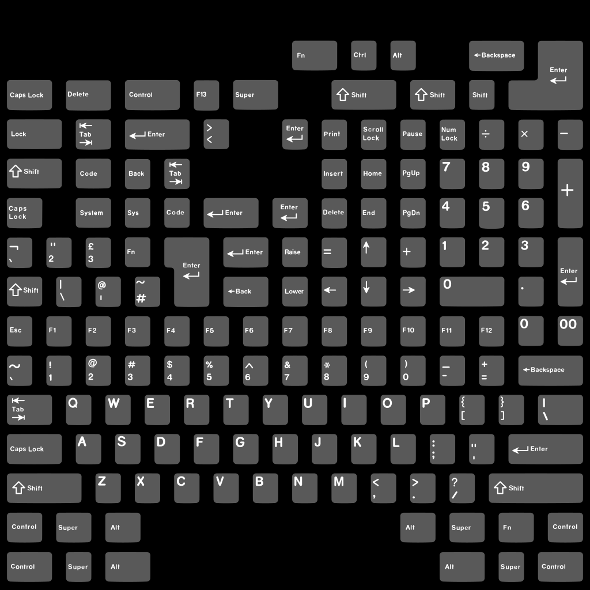
KRK kommt mit Vorlagen, um die Generierung dieser Masken einfacher zu machen.
Der Paletten-Workflow
KRK2 führt einen neuen Workflow ein, der bei der Farberkundung und dem Design hilft. Wie Sie inzwischen gesehen haben, können Sie mit dem KRK-Panel die Farbe der Keycaps individuell steuern. Sie können mit einer benutzerdefinierten Farbe pro Keycap beginnen und diese Farben dann in eine Palette ziehen, um Ihre Farbgebung zu definieren. Die Paletten-Node-Gruppen sind die andere Komponente dieses Workflows.
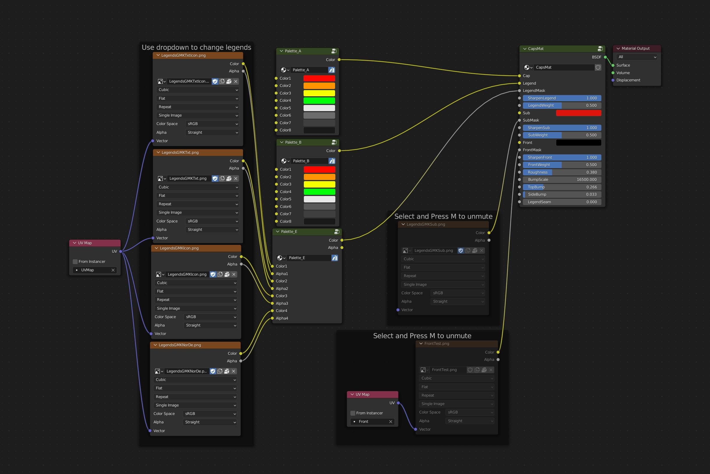
Die Paletten reichen sowohl von A-E als auch von einer eigenständigen Palette zum Antrieb des Materialeditors. Sie verfügen über acht Steckplätze für Farben, während Palette E vier für Farbe und vier weitere für Alphas hat.